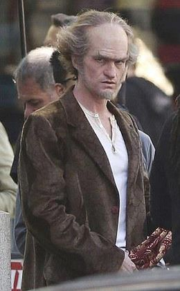
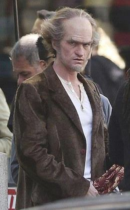

| Personaje | Foto | Rol |
|---|---|---|
| Klaus Baudelaier | Ávido lector, y conocedor de códigos | |
| Violet Baudelaier | Ingeniera, e inventora | |
| Conde Olaf |  | Villano de la serie, y pésimo actor |
Género:
Acción, comedia, y misterio
Sinopsis:
Tres hermanos quedan huerfanos tras la misteriosa desaparición de sus padres y son adoptados por un villano que está tras su fortuna
Temporada 1:
Temporada 2:
Temporada 3:
| Personaje | Foto | Rol |
|---|---|---|
| Klaus Baudelaier | Ávido lector, y conocedor de códigos | |
| Violet Baudelaier | Ingeniera, e inventora | |
| Conde Olaf |  | Villano de la serie, y pésimo actor |